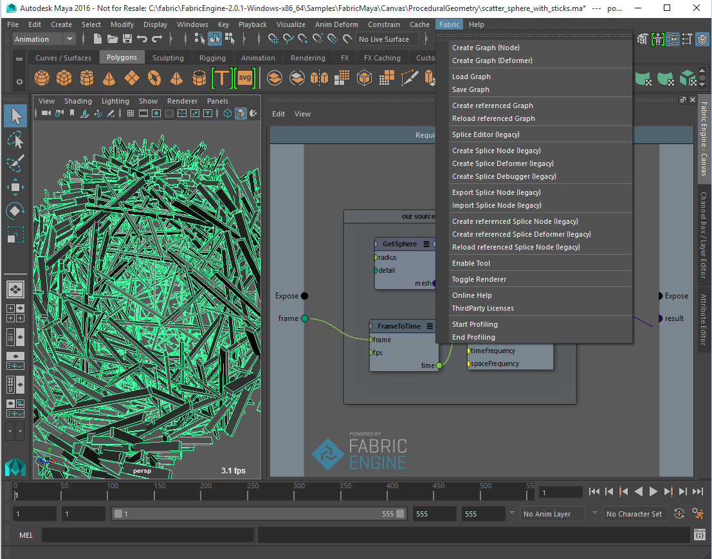
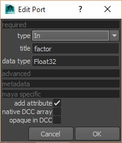
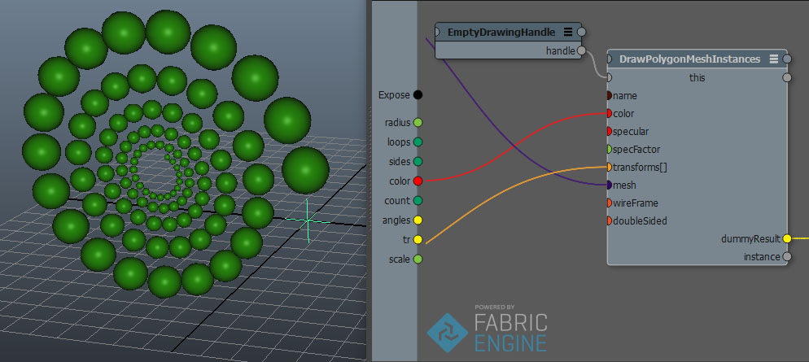

Maya内部のCanvas¶
Canvas Node Types¶
Fabric for Maya comes with two node types:
The CanvasNode is a generic MPxNode where you can attach almost every kind of maya attribute type, it is suited for any generic computation such as rigging or simulation solvers.
The CanvasDeformer is a deformer node that seamlessly works with Maya’s deformation tools and commands and works with a PolygonMesh Array, allowing to modify the positions of a mesh without changing its topology. It is faster than CanvasNode for deformations since it avoids creating a new full mesh.
CanvasNode¶
This is the main Canvas node and the one you will typically be using in your scenes.
You can instantiate the canvasNode in the node editor hitting TAB and typing canvas or through the Fabric top level menu and choosing Create graph (Node). You can then open up the Canvas graph through the Open Canvas button on the Maya Attribute editor.

CanvasDeformer¶
This node is a variant of the Canvas node and it is specialized / optimized for deformations, taking advantage of Maya’s deformation features. The benefit of using this node for deformations rather than the ‘regular’ Canvas node is a gain in speed of around 3x - 5x.
注釈
The gain in speed comes at a price: the node is not as flexible as the ‘regular’ Canvas node and, more importantly, one must respect a certain way of building the Canvas graph. See following section for more detailed information.
You can instantiate the canvasDeformer in the node editor hitting TAB and typing canvasDeformer or through the Fabric top level menu and choosing Create graph (Deformer) with an object selection. You can then open up the Canvas graph through the Open Canvas button on the Maya Attribute editor.
When opening the Canvas graph you will notice there is a default an IO port called meshes.
注釈
This port must not be removed nor renamed or else the deformer node will not work properly!.
The correct and safe way to apply a deformation consists of getting the array of vertex positions of a PolygonMesh element from the meshes PolygonMesh array (using Array.Get and GetAllPointPositions), modify the values of the array and finally setting the vertex positions on the output PolygonMesh to the meshes array with Array.Set.
The following image shows the correct way to do it.

A (get) get the mesh from the array meshes and its point positions as an array of Vec3.
B (do the magic) perform the actual deformation by modifying the values of the Vec3 array. You can do whatever you want with the array just as long as you do not modify its size, ie. the amount of elements in the array should not be changed.
C (set) set the new vertex positions on the mesh and put the changes back into the array meshes.
注釈
when building a simulated deformer, for example a foot step deformer, one must keep in mind that the canvasDeformer resets the meshes input positions at every evaluation. This means that one must store the positions outside of the mesh, for example in a variable with the data type Vec[]. We encourage you to take a look at one of the simulated Maya deformer samples to see how to build such graphs.
ポートまたはアトリビュートの追加¶
Maya内部のCanvasNodeは標準では何のアトリビュートも持ちません。そのため、任意の目的のための汎用的なノードといえるのです。Canvasユーザーインターフェースを開いた後で、あなたは通常の方法でポートを解放することができます。そうすることは、Mayaノードに対応するアトリビュートを加えることにもなります。それによって、あなたは２つの世界の間とデータをつなぐことができるのです。サポートされているデータ型は;
- Boolean
- Integer / SInt32 / UInt32
- Scalar / Float32 / Float64
- String
- Vec3
- Euler
- Color
- Mat44
- Lines
- PolygonMesh
ポートを作成するためのダイアログを使っているとき、Mayaにおいてはいくつかの拡張機能があります。
ネイティブ対マルチ配列(multi arrays)¶
Mayaは２つのタイプの配列をサポートしています。
ネイティブ：MayaはIntArray, DoubleArray, またはVectorArrayを単一のアトリビュートとして表現する手段を持っています。これは大きな配列を扱う際は非常に効率的で、マルチ配列を使うよりもずっと高速です。
マルチ：配列の各要素が各々の単一のプラグを持っています。あなたはそれらをハイパーグラフの異なるものに繋げることができ、配列を対話的に構築することができます。これはとても柔軟性がありますが、ネイティブ配列よりもずっと低速です。
Canvas内部では、（あなたが何を必要とするかによりますが）あなたが望む型の配列を選ぶことができます。
注釈
ネイティブ配列は次の型のみサポートしています： Scalar[]、 Float32[]、 Integer[]、 SInt32[]、 Vec3[]。
不透明なデータ¶
opaque in DCC チェックボックスをオンにすることにより、Mayaは特別なデータ型を、（ネイティブ型として表現することなく）Mayaアトリビュートとして使うことができるようになります。これらのアトリビュートはお互いに接続することができます（例えば、あるMayaノードから隣のMayaノードへ）。Mayaはその接続間のデータを解釈することはしません。これは、あなたがCanvasの外ではアクセスする必要を感じていないものの、しかしそのデータをMayaノード間で渡したいと思っている場合にとても便利です。また、これは、（例えばカスタムのKLデータ構造など）Mayaがまったく表現できないCanvas Mayaノード間でデータを渡すためにも、とても便利なのです。
ポートのメタデータ¶
ユーザーインターフェース機能のいくつかを使うために、あなたはポートに対してメタデータを設定できます。このメタデータは、アトリビュートを作成するときに、Mayaによって取得されます。ポートを作成するときのダイアログのメタデータセクションを開いてください。現時点では、Mayaは range 設定のみサポートしています。

Maya evaluation of Canvas graphs¶
One important aspect to mention is that a Canvas Node is a Maya dependency graph node that is not connected to the Maya DAG. This means that the Canvas graph is going to be evaluated only when there is an output in the Canvas Node that is connected to the Maya DAG (i.e: a Vec3 output port connected to the Translate of a locator).
Canvasグラフのロードとセーブ¶
あなたはCanvasグラフをMayaからディスクにセーブし、またそれらをロードし直すことができます。これをするためには、Canvas Mayaノードを選択し、 Load graph または Save graph を実行します。
注釈
あなたがグラフをロードできるのは、空のCanvas Mayaノードに対してだけです。
リアルタイムレンダリング¶
あなたはCanvasから直接Mayaのビューポートに描画することができます。そのためには、 EmptyDrawingHandle と、それに連続させることのできる ―例え DrawingHandle.DrawPolygonMesh のような― ノード群を使用します。これの例として、 :code:`InlineDrawing Canvasサンプルシーンを見てください。
注釈
複数のノードを連続して（カスケードして）使うときには、各描画ノードに対して、（ name ポートに）適切な名前を設定する必要があります。
キーボードショートカット¶
Maya向けのCanvasでは、全ての標準的な キーボードショートカット を実装しています。